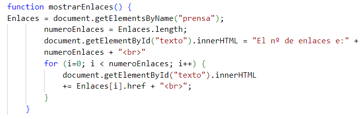

DOM Y EVENTOS EN JAVASCRIPT U2
Volver a unidad 2
Vamos a recorrer estos enlaces para ver su número y a donde enlazan. Pulsa en el botón:
Recorrer nodo de enlaces
Heraldo
Marca
El Pais
RTVE
El Mundo
